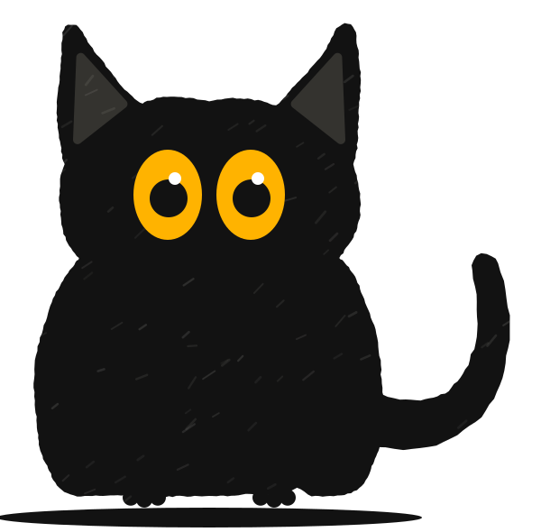

Support
Help with Kakureneko
Installing, the first-run setup, closed-lid mode, the iPhone app, common problems, and how to remove it all again.
Install
- Download Kakureneko.dmg.
- Open it and drag Kakureneko into the Applications folder.
- Open Kakureneko from Applications. macOS asks whether to open an app downloaded from the internet; choose Open.
Kakureneko lives in the menu bar, as a small cat's head. It has no Dock icon. The setup window opens the first time. Updates arrive inside the app (Settings → General → Check for Updates…).
Needs macOS 26 or later, on Apple silicon or Intel.
First-run setup
The setup window has four steps. You can skip any of them and open the setup again later from Settings → General → Show Setup Again….
- Closed lid. Install closed-lid mode with one administrator prompt, or choose Skip · notifications only. See Closed-lid mode.
- Alerts. Allow notifications on the Mac. Then choose Set up my iPhone to get alerts there too: scan the code to get the iPhone app, and the step shows your iPhone as soon as the app runs on it. Or choose Just this Mac: alerts stay on the Mac and nothing goes to iCloud. Send a test to check.
- Agents. Kakureneko lists the coding agents it finds on this Mac. For each one it shows the exact change it would make to the agent's settings. Nothing is written until you confirm, and the original file is backed up to ~/.kakureneko/backups first.
- When done. What happens when every agent is done: Sleep (recommended) or Shut down. Shut down asks for permission to control macOS, and falls back to sleep when an agent is waiting for you or an app blocks it.
The last step also offers Open Kakureneko at login (on by default), so it's there after a restart.
Closed-lid mode
A MacBook sleeps as soon as you close the lid. Keeping it awake takes one system setting that only an administrator can change. Rather than ask for your password every time, Kakureneko asks once, during setup, and installs two small pieces:
- A sleep rule in /private/etc/sudoers.d/kakureneko. It lets your user run exactly two commands without a password, and nothing else:
/usr/bin/pmset -a disablesleep 1 /usr/bin/pmset -a disablesleep 0 - A fail-safe: a small system service (com.kakureneko.failsafe) that runs /Library/Application Support/Kakureneko/kakureneko-failsafe.sh at startup and every minute. It turns sleep back on if Kakureneko stops for about 3 minutes (it crashed or was quit while keeping the Mac awake), or when the battery reaches 7 %.
Without closed-lid mode, Kakureneko runs in notifications only mode: alerts still work, and closing the lid sleeps the Mac as usual.
To check it or remove it on its own, open Settings → Closed Lid & Safety. Remove… takes both pieces away; Kakureneko keeps sending alerts.
Safety stops
With the lid closed, Kakureneko lets the Mac sleep when any of these happens, and sends an alert that says why:
- The battery drops to 20 % (Settings → Closed Lid & Safety; you can choose 10–50 %), or has less than about 25 minutes left.
- The Mac runs hot for a minute.
- The network has been gone for 15 minutes.
- The lid has been closed for 12 hours (you can choose 1–24).
On battery, Kakureneko plays a sound when you close the lid while an agent is working: a reminder not to put a running Mac in a bag. You can turn off Allow on battery to let the Mac sleep whenever it's on battery with the lid closed.
The iPhone app
The iPhone app gets the same alerts as the Mac, shows what the Mac is doing, and has Keep awake and Sleep now buttons. There is no pairing: the Mac and the iPhone find each other through iCloud. You can install either one first.
- Get Kakureneko for iPhone from the App Store. It needs iOS 18 or later.
- Sign in to the same Apple Account on the iPhone and the Mac, with iCloud on (Settings → your name → iCloud on iPhone, System Settings → your name → iCloud on Mac).
- Open the app and allow notifications. Turn on Time Sensitive alerts too, so "an agent needs you" can get through Focus.
- The app asks whether Kakureneko is on your Mac. Not yet shows the download address, with buttons to send the link to your Mac or copy it. Yes, it's on my Mac shows what to do on the Mac. Either way, the app says Connected to your Mac as soon as the Mac shows up.
- On the Mac, choose Set up my iPhone during setup, or later turn on Send alerts to your iPhone in Settings → Notifications. Send them sets when: Only when the lid is closed (the default), When I'm away from the Mac, or Always.
To check the connection, tap Send Test Alert in the app's Settings tab, or Send Test in the Mac's Settings → Notifications.
Problems and questions
I don't get alerts on my iPhone
- By default, alerts only go to the iPhone while the Mac's lid is closed. With the lid open they stay on the Mac. Change Send them in the Mac's Settings → Notifications.
- Check that the iPhone and the Mac use the same Apple Account and that both are signed in to iCloud.
- Check that notifications are allowed for Kakureneko on the iPhone (Settings → Notifications → Kakureneko).
- The Mac needs an internet connection to send an alert.
- Send a test from the iPhone app's Settings tab. If the test arrives, the connection works and the timing setting is holding alerts back.
- Make sure that kind of alert isn't switched off in the Mac's Settings → Notifications.
Alerts arrive without a sound
- Quiet hours may be on (Mac: Settings → Notifications). During quiet hours alerts still arrive, silently.
- A Focus or Do Not Disturb may be on. Allow Time Sensitive alerts for Kakureneko so the important ones get through.
- Check the sound setting for Kakureneko: iPhone Settings → Notifications → Kakureneko, or Mac System Settings → Notifications → Kakureneko.
- Some alerts are quiet on purpose, such as "Mac slept 01:12–07:40", which you read later.
My Mac went to sleep anyway
- Closed-lid mode may not be installed. Open Settings → Closed Lid & Safety; without it, Kakureneko only sends alerts.
- No agent was working, or Kakureneko didn't see it. Check the menu, and Settings → Agents for each agent's hook.
- A safety stop: low battery, heat, no network, or 12 hours closed. You got an alert that says which.
- Allow on battery is off and the Mac was on battery.
- The countdown ran out: by default 5 minutes after the last agent finished, or 10 minutes after one started waiting for you. Tap Keep awake on the alert to hold it.
- Kakureneko was switched off in the menu, or it quit. If it quits while keeping the Mac awake, the fail-safe turns sleep back on after about 3 minutes.
My Mac doesn't sleep after the agents are done
- The countdown only starts with the lid closed and nobody at the Mac. With the lid open, your usual macOS sleep settings apply.
- Keep awake may still be on: the menu shows until when.
- An agent may still count as working. Check the menu. An agent that stops making progress is marked as stuck and no longer keeps the Mac awake.
The iPhone says my Mac isn't responding
The Mac hasn't sent an update for 12 minutes. It may be offline or out of power, or Kakureneko may have quit. Open the lid or check the Mac. When the Mac goes to sleep or shuts down normally, the app says so instead.
I tapped Sleep now or Keep awake and nothing happened
- The Mac must be online to hear the button. The app tells you when the Mac didn't respond.
- Buttons on an old alert stop working after a while; use the buttons in the app instead.
- Sleep now and Shut down only apply to the situation you saw. If something changed in the meantime, for example a new agent started, the Mac ignores the tap and sends an alert saying why.
An agent isn't recognised
Open Settings → Agents. It shows each agent's hook and when Kakureneko last heard from it. If an agent update removed the hook, use Repair, or turn on Repair hooks automatically. Agents without a hook are recognised from their processes, which is less precise.
My other apps are slow while the lid is closed
That's on purpose: with the lid closed, Kakureneko slows down apps the agents don't need, so the battery lasts. It never touches apps that run or talk to an agent, play audio or download. To leave an app alone, add it under Settings → Pausing Apps → Never pause, or turn pausing off there.
Can I put my Mac in a bag while it works?
Better not. A closed bag traps heat. Kakureneko lets the Mac sleep when it runs hot and plays a sound when you close the lid on battery as a reminder, but a desk or a shelf is the right place for a working Mac.
Where are the logs?
In ~/.kakureneko/log: kakureneko.log, hook.log and guard.log. They record what Kakureneko did, not your prompts or the agents' messages. Attaching them helps when you write to us.
Uninstall
Open Settings → General and choose Uninstall Kakureneko…. It shows a list first, then removes everything Kakureneko added to your Mac:
- closed-lid mode: the sleep rule and the fail-safe (it asks for your password),
- the hooks in your agents' settings,
- opening at login,
- its settings, logs and config backups in ~/.kakureneko and ~/Library/Application Support/Kakureneko,
- and the app itself, which goes to the Trash.
Dragging Kakureneko to the Trash isn't enough. It leaves closed-lid mode and the agent hooks behind. If you already did, download Kakureneko again, open it, and use Uninstall Kakureneko….
If you can't open the app, you can remove closed-lid mode in Terminal. These are the same commands Kakureneko runs:
sudo /usr/bin/pmset -a disablesleep 0
sudo /bin/launchctl bootout system/com.kakureneko.failsafe
sudo /bin/rm -f /Library/LaunchDaemons/com.kakureneko.failsafe.plist /private/etc/sudoers.d/kakureneko
sudo /bin/rm -rf "/Library/Application Support/Kakureneko"Then remove the entries that mention kakureneko-hook from your agents' settings (the originals are backed up in ~/.kakureneko/backups), and only after that delete ~/.kakureneko and ~/Library/Application Support/Kakureneko.
On the iPhone, delete the app as usual. Uninstalling doesn't delete Kakureneko's records in iCloud; the privacy policy says how long they stay and how to ask us to delete them.
Contact
Write to support@kakureneko.com. Tell us your Mac model, your macOS version and Kakureneko's version (Settings → General → About Kakureneko), and attach the logs if you can.

Still stuck?
Write to us with what you expected and what happened instead, and attach the logs if you can.